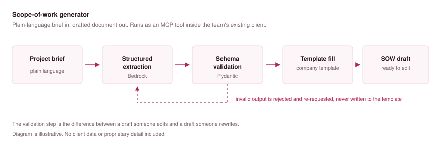

Before anyone could quote a client, a solution architect had to hand-write a scope-of-work document. Around thirty minutes each time, on work that was largely the same shape every time. The same sections, the same structure, different details. It was the slowest step between a conversation and a proposal.
A tool that takes a plain-language project brief and produces a first draft directly in the company's own template. I built it as an MCP server so it runs inside the tools the team already had open, rather than being one more application they'd have to remember to use.
The brief goes through structured extraction, the output is validated against a schema before anything is written, and the validated fields fill the template. The validation step matters more than it sounds: it's the difference between a draft someone edits and a draft someone rewrites.

The team has paused it while they redesign the wider scoping process it plugs into. That's worth saying plainly: a tool that depends on someone else's workflow lives and dies with that workflow. If I built it again I'd make the template layer swappable from the start, so a change in process is a config change rather than a reason to stop.
I wired the template and the model provider straight into the tool logic. It worked, and it was the fastest way to get something the team would actually use, but it meant swapping either one was a code change rather than a config change. I'd build it now with dependency injection and abstract base classes for the pieces that vary: one interface for the template writer, one for the model provider, both passed in at startup. Same tool, but a new template or a different model is a line of config, and I can test the extraction logic without calling a model at all.
This is client tooling and the source isn't public. Any walkthrough uses dummy data only. I'm happy to talk through the architecture and the decisions behind it on a call.